Portfolio
From Ideas to Executions
Going
Web Application Prototype
TutorNow
Mobile Application
Froglanders
Mobile Responsive Website
Bucket
Mobile Responsive Web Application
Music Application Redesign
Mobile Application Wireframes
Website Logos
Graphic Design
Room 306
Cognitive Design
EnVision Maker Studio
Cognitive Design
Going
A web application prototype for movie ticket crowdsourcing.
Going gives customers the best deals through flexible ticket pricing by working with local theaters. Customers find the movies using our platform and can either commit or buy tickets at a more affordable price with the power of crowdsourcing. Theaters set ticket goals and customers save money goals are met!
Some obstacles we faced was branding ourselves. We wanted to recapture the idea that the theater is an experience of going and not just watching, hence our name. To capture the cinema experience and red carpet feel, we decided to use the video reel symbol as our icon. This icon mixed with the name GOING gave rise to a series of logos. We settled on the cursive going logo because it is elegant like the red carpet while utilizing our icon. The choice of black and white colors convey a simple and nostalgic feel because movies back then were in these colors. We decided on the color Tamarillo (red) because it is eye-catching and easily reminds users of the red seats of archetype movie theaters and classy red carpets of opening nights.
FINAL PRODUCT: Our web application prototype and idea was inspired by Massdrop and our teammate's love for going to the movies. Our team placed 3rd in a competition among 15 other teams with Intel product managers on the judging panelist. In the future, we hope to improve these aspects of the application: add recruit friends and frequent purchase incentives and add a movie calendar on the landing page.
TutorNow
A mobile application for tutoring.
TutorNow aims to provide individuals with efficient and real time service in tutoring.This application is created for those with fluctuating schedules.This redesign was created with CSS, HTML, JavaScript, Ionic, and Google Maps API in a team of four students.
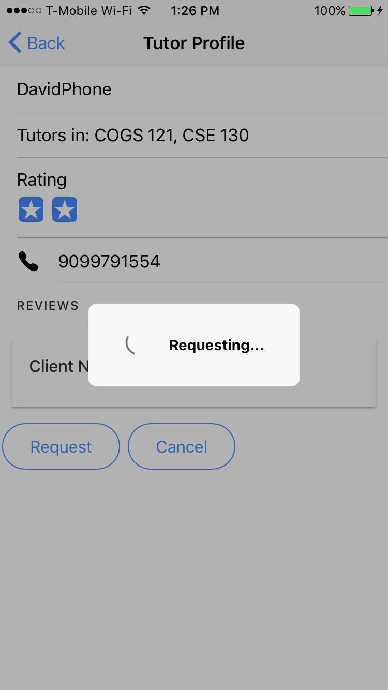The user opens the application to see a map of available tutors and then can request a tutor.
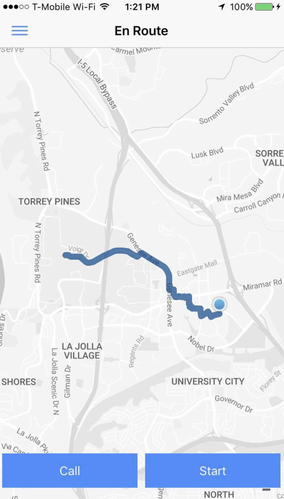The user can see how far the tutor is from their meeting location
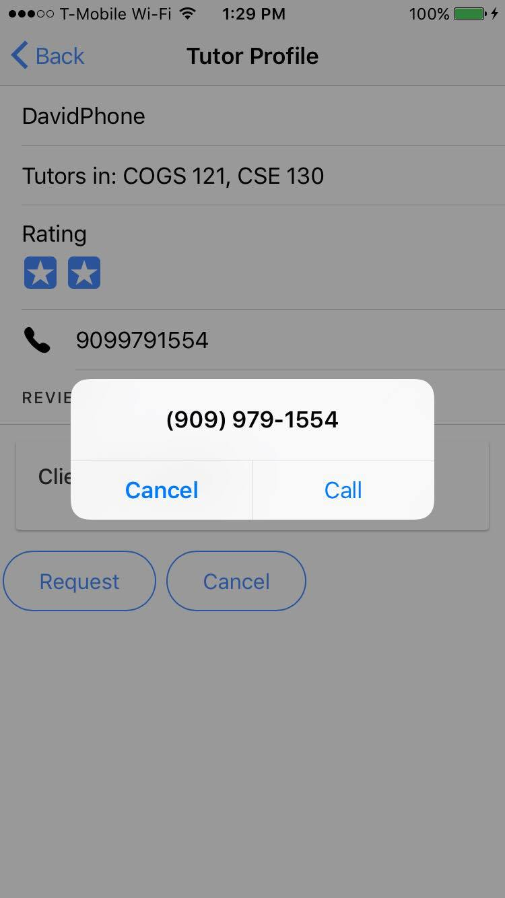The user can make an in app call to the tutor if clarification with the meeting location needs to be made
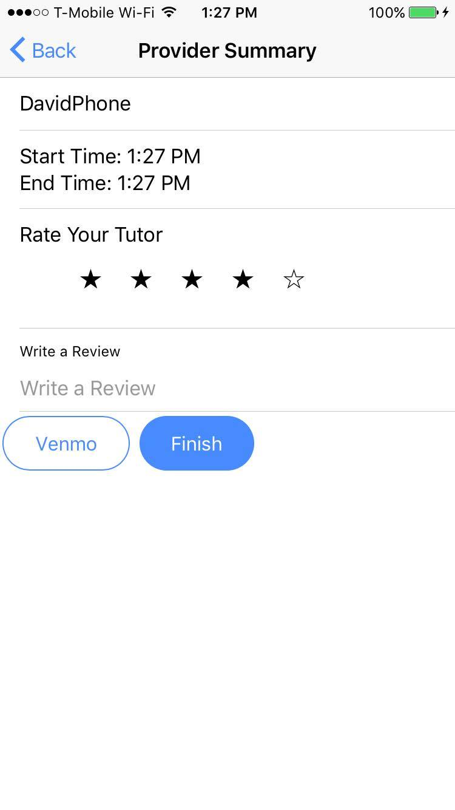After tutor session ends, the user gets a summary of their tutoring session
Some obstacles we faced include pivoting from our original idea of offering mulitple real time services including lessons and other services. From our user testing, we found the additional services were overwhelming and decided to focus solely tutoring, the most popular service.
FINAL PRODUCT: Our mobile application was inspired by Uber and the high demand of tutoring in the CSE department. In the future, we hope to improve these aspects of the application: allow users to tutor in groups, surge pricing for peak hours, and ask questions.
Follow our weekly progress at our repository.
Froglanders
A redesign of Froglanders website.
Froglanders is a frozen yogurt cafe in La Jolla, CA that needed rebranding to increase sales from college students. This redesign was created with Sketch, InVision, CSS, HTML, JavaScript, and Google Maps API in a team of four students.
This our low-fidelty mobile prototype that features a hamburger button that exposes a left navigation bar featuring. In addition to menu, we also added "Daily Flavors" so consumers can easily see what flavors of froyo are available. The menu was the biggest challenge in our low-fidelty web prototype due to it's extensive menu. We decided to have the items on one page separated by photos and headers for different sections because we felt the number of clicks would be important to maintain customer retention on the page.


Some obstacles we faced include organizing the nutrition facts in a fluid and visually appealing way, but found the card system to be a better way to display the information. Due to its extensive menu, we found it hard to create sections without creating too many clicks especially its coffee selection, so we created a separation between cold and hot drinks so the user would not be overwhelmed.
FINAL PRODUCT: Our redesign was inspired by the designs of Yogurtland and Pinkberry. In the future, we hope to improve these aspects of the website: menu organization and the nutritional value cards.
Follow our weekly progress at our repository.
Bucket
A mobile responsive web application created for Introduction to Human Computer Interaction, Fall 2016.
Bucket is an application to create and track bucket lists collaboratively, letting you work on your own or with your friends and family. Recreating the concept of the traditional bucket list. This application was created with CSS, HTML, JavaScript, jQuery, Node.js, React, mongoDB, and Yelp API in a team of three students.
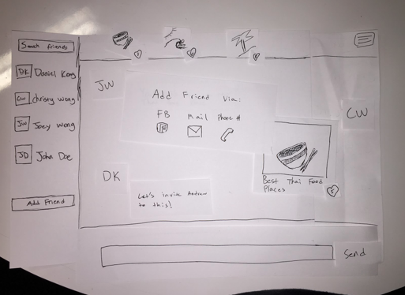This is the original paper prototype we created which featured a chat room with a sidebar displaying friends and a navigation bar with activities and their popularity. Our prototype slowly shifted as our user research showed us that content in chats often get lost and messy over time. We migrated to a card system with Trello in mind.
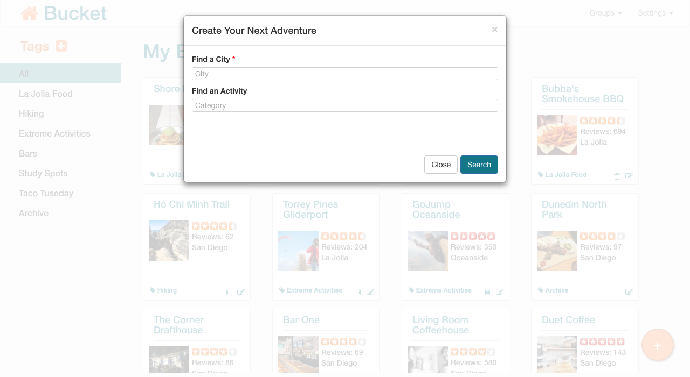
The user is initially logged into their own personal bucket list, which contains tags they can personalize. They can add activities using the Yelp API integrated search to each tag created. The user can also create groups with their friends, where the group can create tags and add activities to each tag seamlessly.
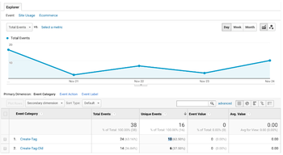Some obstacles we faced were confusion between creating buckets and creating groups because users would often confuse them. We conducted AB testing using Google Analytics, where we had one test with the name 'Bucket' and another test with the name 'Tag' to see which one was more intuitive. The test with the name 'Tag' had more tags created so we concluded that version with 'Tag' was most straightforward.
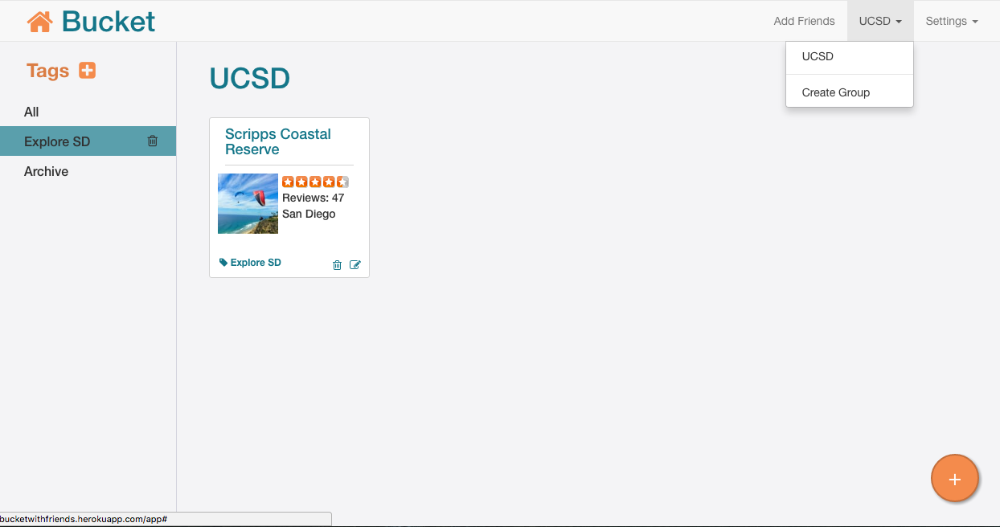When logged in, each group's navigation bar has 'Add Friends,' 'Groups', and 'Settings.' Based on user feedback, there was a lot of confusion between groups and tags, so we chose to have 'Groups' on the navigation bar to reflect the group the user is currently in instead. This not only reduces confusion but this design choice provides the user more feedback.
FINAL PRODUCT: Our application was inspired by the designs of Trello and the idea of a traditional bucket list. In the future, we hope to improve these aspects of the application: Refine Help Modal - to highlight the areas of the application to accomodate the 'Getting Started' tips. Filter/Sorting for Yelp search results - to provide quality search results. Dropdown suggestions for Search - to help users conveniently search. Adding activities across groups - to allow users to add cards to their own personal bucket if they found an activity in a group they wanted to do on their own.
Music Application Redesign
Music Application Redesign using Invision and Adobe Illustrator for Usability and Information Architecture, Fall 2016
Our redesign was inspired by the designs of Facebook, Spotify, SoundCloud, Apple Music, and YouTube Music because we valued consistency and user intuition. As an individual who listens to music daily and uses a few music applications, I always find myself having to adapt to locate a certain feature on the application. Our goal was to create a music application largely influenced by Facebook. Why Facebook? We felt a music application maintaining familiarity would be more intuitive.
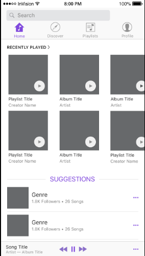For the home page, we chose to display 'Recently Played' first with photos based on our needfinding. Users liked Spotify's “Jump Back In” feature because they were able to continue where they left off. We did, however; improve Spotify's concept of "Jump Back In" by adding two rows to reduce the amount of times the user would have to swipe right to go to where they left off. For the rest of the application pages, the scroll up and down and swipe up features were integrated across all the modals. This design choice was to stay consistent with already existing interaction methods on many popular applications. For the home page, we wanted to keep it simple because users reported that Spotify was very overwhelming at times; our simplification lets the user listen to music conveniently without excessively swiping right or scrolling.
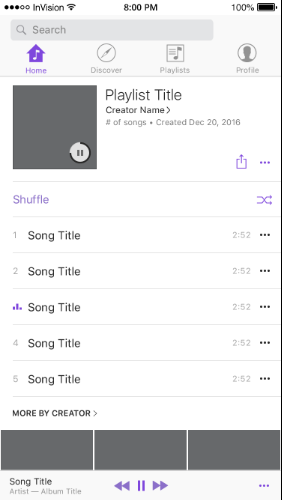The screen for each playlist is largely influenced by Spotify's and SoundCloud’s playlist screens. Like Spotify and SoundCloud, we used the three dots “more options” icon to encompass adding, deleting, sharing, and viewing/following the artist. Two features that set our playlist page apart from the two applications mentioned above is one, the icon located next to the current song playing. Two, our “More by Creator” label is visible above the fold to provide users easy discoverability and quick access to other related playlists. Users will benefit from the ease of discovering new music without having to switch over to the “Discover” section in Spotify. I brought back the search and navigation bar on the top of the screen because we wanted to give the user flexibility to go back and forth on most used screens/functions.
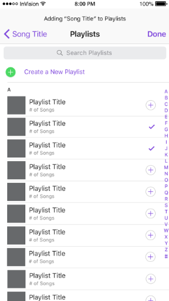FINAL PRODUCT: Our redesign was largely influenced by Spotify and Facebook because those were the two applications most used based on our needfeeding results. The top of the screen features a search bar and a navigation bar with four icons. The user can browse songs through the index and search bar, add and delete songs using the + and - icons to the left of the song, and create a playlist by selecting a song.
Website Logo
Some logos I made for my website using Adobe Illustrator.
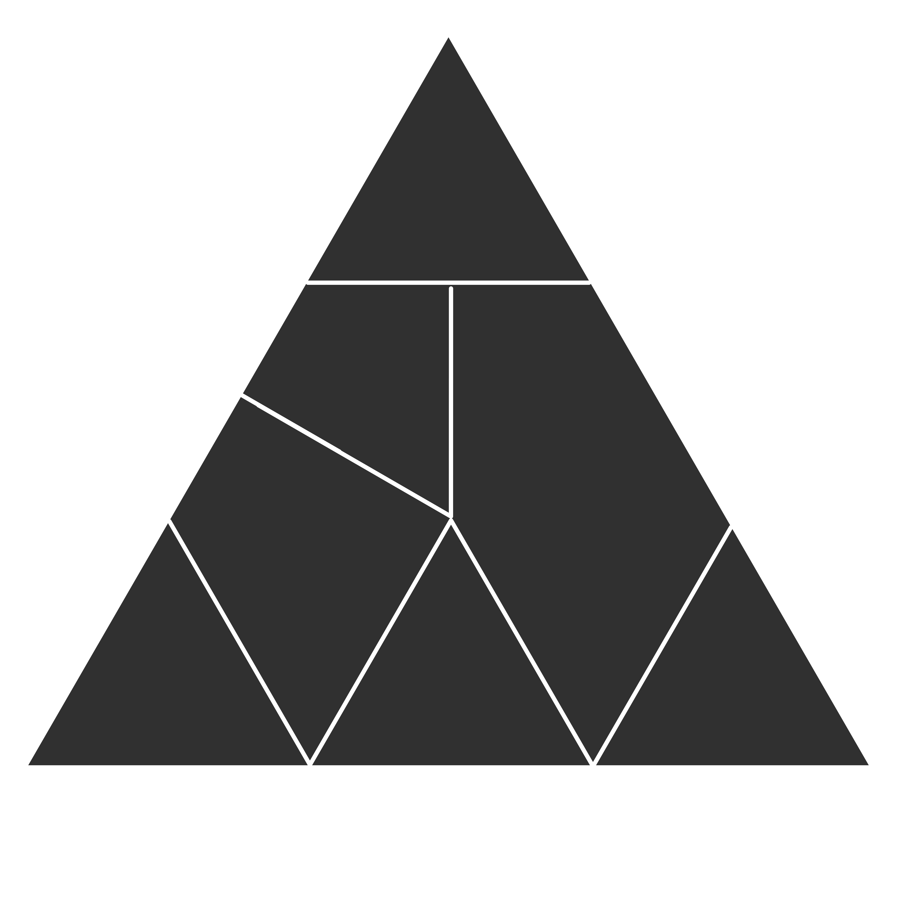My first draft of my final logo incorporates my initials J and W through fragmentation of the all encompassing triangle. The initial logo is inspired by the concept of a mosaic to reflect the many experiences that have shaped me into the individual I am today.

My final logo encompasses aspects of my character - the J and W representing my name, the mountains the W makes to reflect my hobby of hiking, and the triangle (bearing resemblance to a mountain) encasing my initials to signify my love of exploration.
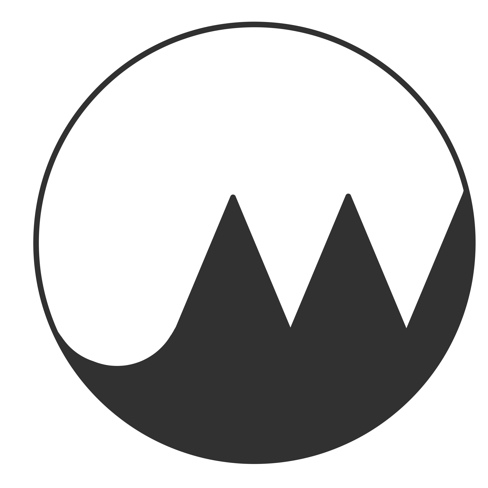My second logo design draws inspiration from living in close proximity to La Jolla beaches and from attemping to learn how to surf. My first initial is the wave coming in with the second initial as the rigid waves following. A circle encloses my initials because I feel most comfortable in a pool since I teach swimming to children and adults as a swim instructor.
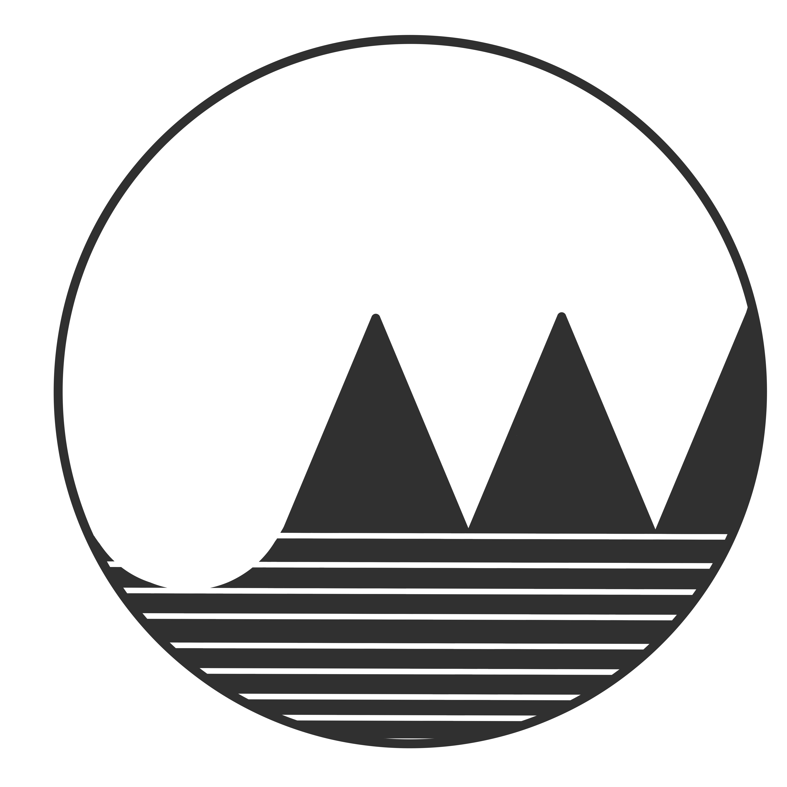This is a variation in my second logo design. I added lines to highlight my initials because I felt it was hard to differentiate my initials in the first design of my second logo.
Room 306
Designing Room 306, an extension to the EnVision Maker Studio, for EnVision Summer Internship 2016
Looking at the additional needs not met by the EnVision Maker Studio, my team and I (5 students) found what resources students needed to supplement the EnVision Maker Studio to optimize the use of Room 306. As the team lead for my team, I organized and lea team meetings as well as updated the Director weekly on the team's progress.
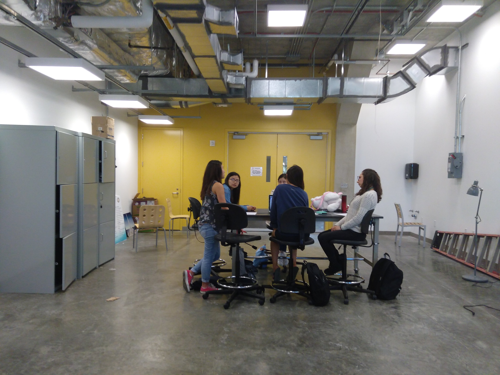From our user interviews, students wanted a place to curate their ideas and collaborate with others, to spark their creativity, and to draw inspiration for their upcoming projects.
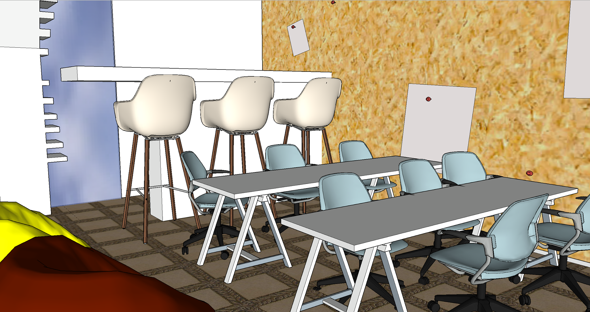 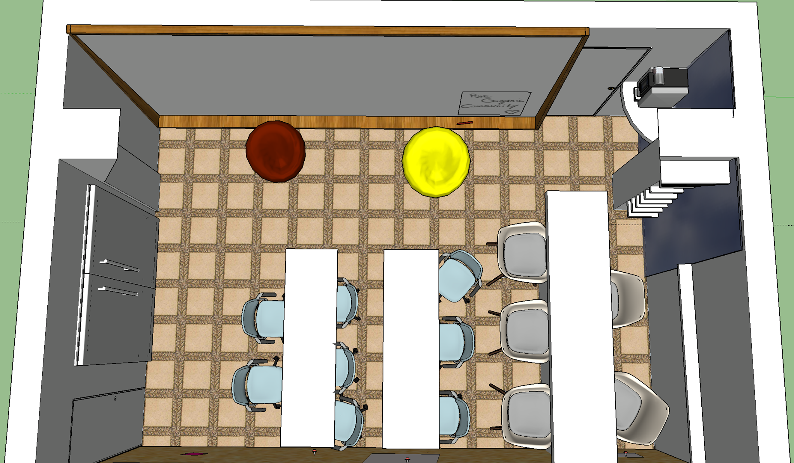 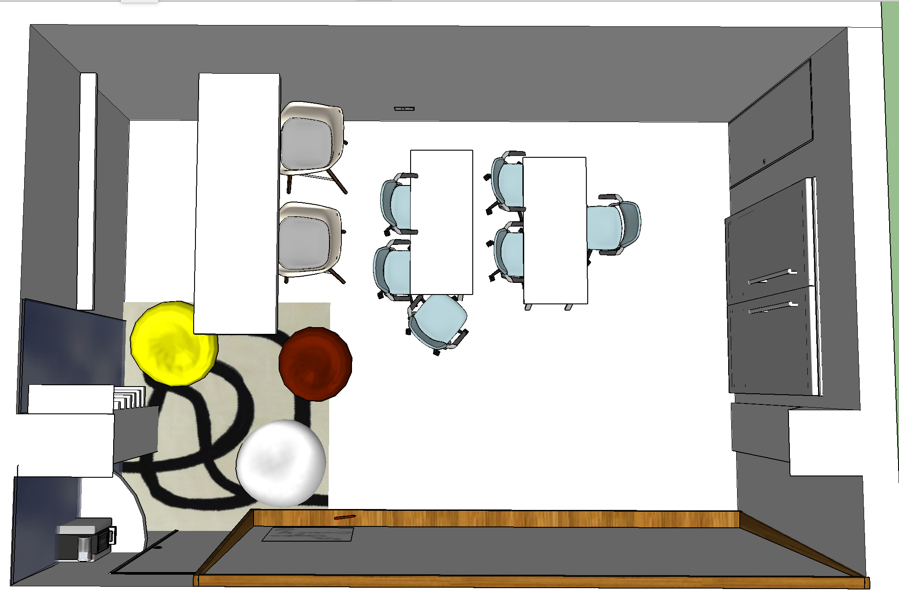We drew inspiration from Design Lab and Digital Media Lab on campus and the San Diego Public Library MakerSpace for our collaborative space. We came up with many versions of the room layout and discussed them with the Director. The Director brought our ideas to the Jacobs School of Eningeering. From this experience, I found out how challenging it was design a collaborative space from scratch. After needfinding, the challenge was finding ways to spark creativity and arrange the room in way that would encourage collaboration without physically testing our ideas.
FINAL PRODUCT: At the end of our internship, our team finished our vision for the room. Room 306 will be a thinking hub that serves as an extension of the EnVision MakerStudio, promoting one of the first creative commons at UC San Diego. This space is open to all engineering and visual arts students and instills the values of these two communities. Room 306 invites students of diverse skillsets to collaborate: featuring a Wall of Innovation to showcase their masterpieces, a Lego Wall to spark ingenuity, and a whiteboard wall to provide a foundation to build and share your ideas. We hope this space embodies the idea of a drawing board, where students can modify, re-create, and recycle ideas. The “by students, for students” mentality wishes to inspire a culture of cooperation. Room 306 is expected to open at the end of Winter Quarter 2017.
EnVision Maker Studio
Improving the EnVision Maker Studio for Cognitive Design Studio, Spring 2016
The EnVision Maker Studio, an arts and engineering studio, is the first hands-on creative space where students in engineering and visual arts can collaborate on innovative designs at University of California, San Diego. My team and I (5 students) worked together to improve the overall environment for the new creative space on campus.
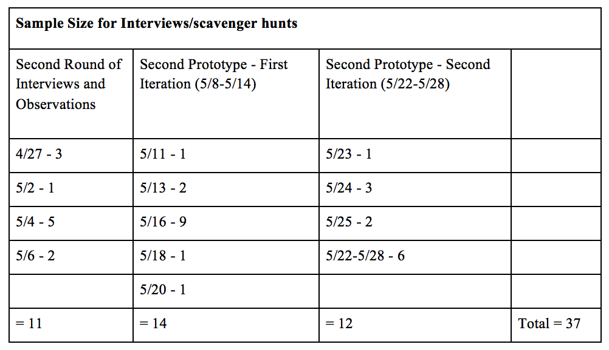 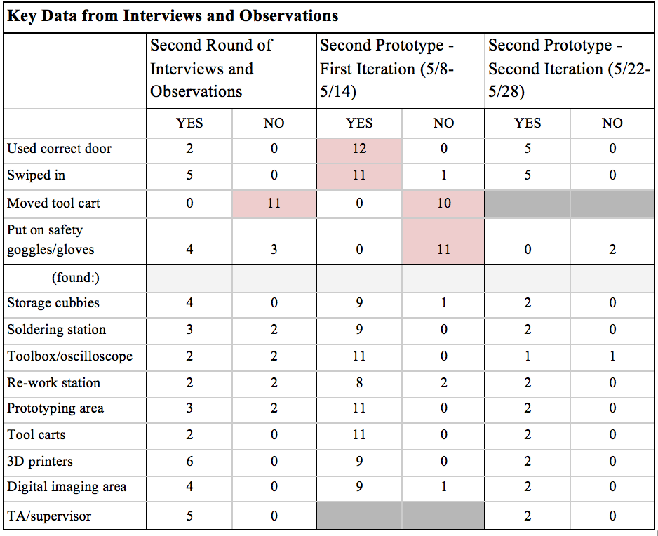Our design opportunity was to provide an approachable and safe environment for students to make the most out of the resources available in the studio. Since the studio opened in January 2016, we anticipated that most users would be new to the space and noticed that new users faced more problems in comparison to experienced users; so our target audience was first-time users of the studio. Through our needfinding process, we narrowed down our opportunity to familiarizing users to the Envision Maker Studio’s physical space and procedures. Our goal was to help users easily identify the locations of different workstations and tools and to facilitate some of the most important procedures required in the studio, such as signing in when they enter the space and putting on safety goggles in caution areas.

After identifying our problem areas using the data collected from our user interviews and observations with our Affinity Diagram. We had signs for our rapid prototyping to see how efficiency and familiarity improved through observations throughout the week. Little improvements were shown and we found many students missing our dull signs so we opted for more colorful signs and a new method to test our prototypes. Our main method of evaluating the efficacy of our second iteration was through a scavenger hunt which we asked users to complete a list of steps that took them around the studio.
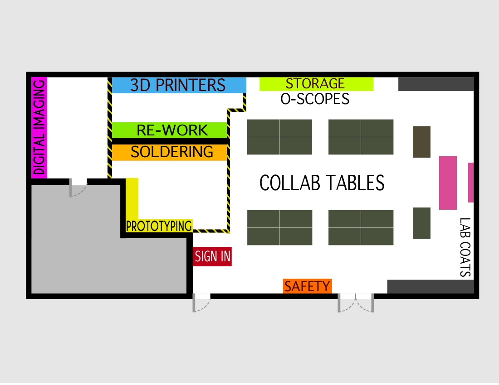 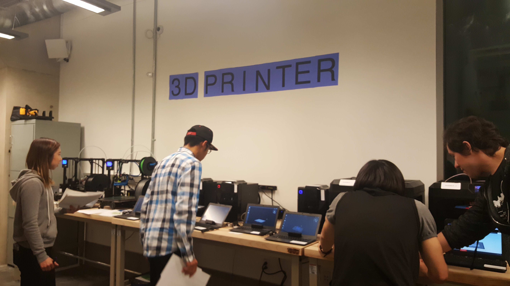Additionally, we created a floor plan using Adobe Illustrator(laminated and printed) of the space next to the sign-in station. These act as portable maps that students can reference at their workstations to familiarize themselves with the studio while working on projects. This is meant to help supplement the large signs we have implemented for each station in the studio. The signs are large and brightly colored in order to grab students’ attention and clearly label the space in a way that contrasts the bare, white walls. In our improved scavenger hunt, we tested our studio maps, and found that though our map was straightforward, it limited users’ ability to navigate on their own because they were fixated on the map.
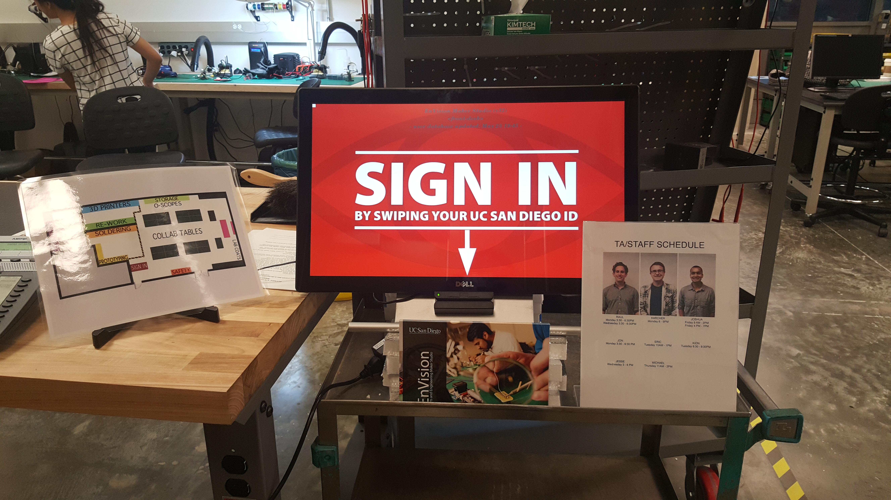Our data also informed us that many first-time users had no idea where to ask for help in the studio. Therefore, we created a TA/Staff schedule next to the sign-in station to inform students who to ask for assistance. Our prototype testing indicated that users are now aware of where to look for a TA for help. We decided to place all these resources at the sign-in station so upon entrance, students are immediately able to use the space in an effective way.

Lastly, we implemented photos of tools on each of the tool carts in order to clearly indicate where students should return specific tools. This design solution addresses the problem of students not knowing where to return tools and subsequently ending up with disporportionate tools on each of the tool carts. The silhouettes are made of pictures that we took of each tool; they are printed to scale in order to make the process of returning tools efficient and visually intuitive.

FINAL PRODUCT: Throughout this process, we learned how certain layouts and design choices would make the EnVision Maker Studio more approachable. From the data we collected from our final prototypes, we found that there is still much to improve on. In the future, we hope to improve on the following: caution tape/safety goggles sign, user’s experience of transporting tools, and the names of the stations.